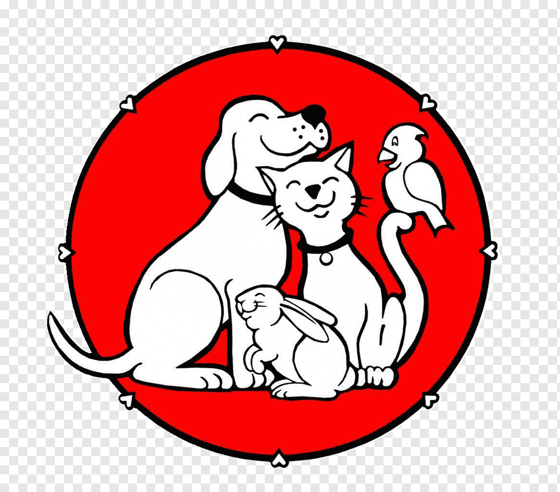

DONACIONEn Patitas Alegres, somos una fundación dedicada al rescate, cuidado y protección de animales en situación de abandono o maltrato. Nuestro compromiso es brindarles un hogar temporal donde reciban el cariño, atención médica y alimentación necesarios para su bienestar. Creemos firmemente en la importancia de crear una sociedad más empática y consciente del cuidado animal.
Las metas que tenemos son la rescatar y rehabilitar animales en situaciones de vulnerabilidad, proponer la adopcion responsables y fomentar la educacion sobre el respeto y bienestar animal en la comunidad.
Nuestro albergue ofrece una segunda oportunidad a cientos de animales, transformando sus vidas a través del cuidado y la inclusión.
Contribuimos a construir una sociedad más justa y solidaria, fomentando la responsabilidad colectiva hacia los animales y promoviendo el respeto por la vida en todas sus formas.
Brindar refugio, cuidado y amor a los animales más necesitados, garantizando su rehabilitación y promoviendo adopciones responsables, mientras creamos conciencia sobre el respeto animal en nuestra comunidad.
Ser reconocidos como un modelo de referencia en el rescate y cuidado animal, logrando una sociedad donde cada ser vivo sea valorado y respetado, y donde ningún animal sufra abandono o maltrato.